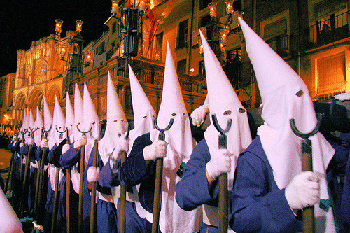

First off, this article is not to make any statements in regards to the actions of the Ku Klux Klan. I am merely sick and tired of the hypocrisy of this organization in their foolish adherence to Christian beliefs, which has nothing whatsoever to do with their Satanic origins.
For the past several hundred years, there has been this lethal pestilance called "Christianity." Christianity was invented by the Jews to remove spiritual/occult knowledge from the Gentiles for world control. Because of the plethora of contradictory biblical scriptures and their unclear meaning, these can be cleverly applied to any belief system to gain control.
"Christian Identity" promoted by Native American Indian "Richard Butler," founder of "Aryan Nations" is another most effective Jewish tool and weapon to divide and conquer the Gentiles, while promoting the fictitious Jewish "YHVH" which is in reality the Jewish people.
A powerful psychic connection is made and again, one is under the control of the Jews. In the end, they laugh- they had you all along, regardless of which side you are on. Because of the systematic removal of spiritual knowledge and power from the Gentiles, through the Inquisition [WHICH WAS BLATANT GENOCIDE OF THE WHITE RACE PERPETRATED BY THE CATHOLIC CHURCH, WHICH IS AND ALWAYS WAS IN THE HANDS OF THE JEWS - ALL CHRISTIANS, REGARDLESS OF SECT ARE SPIRITUAL SLAVES TO THE JEWS, WHETHER THEY REALIZE THIS OR NOT!], through the burning of the Library of Alexandria, the destruction of Ancient Pagan [READ GENTILE] temples and places of spiritual meeting; the systematic slaughter and mass murder of Druid priests and many other Pagan Leaders, most Gentiles have no idea what is going on spiritually, let alone how to deal with it.
The Ku Klux Klan was never Christian to begin with. By clever infiltration, the Jews again have gotten control of this organization by infesting it with "Christian Identity."
Christian Identity preaches that the Jews are "Satan's People." Nothing could be further from the truth. "SATAN" IS A WORD FOR "ENEMY" IN HEBREW. No one has been more blasphemed, slandered, lied about, and attacked by the Jewish controlled media and "holy" books than Satan and his Demons, who are the Original Pagan Gods of the Gentiles. All have been made into hideous monsters, to be avoided at all costs. Ignorance, fear, and lies are used to maintain thought control. In addition, "Satanism" is a collective label for the original PAGAN religions that preceded the Jewish invention of Christianity from hundreds to thousands of years. "PAGAN" MEANS "GENTILE"!
The real origins of the Ku Klux Klan trace back to the Knights Templar. The Knights Templar were said to have been very wealthy and Satanic towards their end, and worshipped the "Head of Baphomet." Now, the Catholic Church, run and controlled by the Jews had control of nearly all of the wealth and power. The Latin word "Caput" means "head" and is an origin for the word "Capitalism." The Knights Templar may have been persecuted because wealth was in the hands of the Gentiles and not the Jews/Catholic Church.
The original Ku Klux Klan, founded in Pulaski, Tennessee, in 1866 [the order was disbanded around 1869] by 6 Confederate officers including 33 degree Scottish Rite Freemason Albert Pike, and Nathan Bedford Forrest. Forrest was a former Confederate General and Freemason. He was the first Imperial Wizard of the KKK. Albert Pike who was a Satanist, held the office of Chief Justice of the KKK while he was simultaneously Sovereign Grand Commander of the Scottish Rite of Masonry, in the Southern Jurisdiction.
The second Ku Klux Klan was founded in 1915 by former Methodist Minister William J. Simmons, and this is when the fundamentalist Christian Protestant influence emerged that has stuck with the Klan ever since. "Convalescing after being hit by an automobile in 1915, Simmons concerned himself with rebuilding the Klan, which he had seen depicted in the newly released film The Birth of a Nation. He obtained a copy of the Reconstruction Klan's "Prescript," and used it to write his own prospectus for a reincarnation of the organization." 1
Simmons had no actual connection to the first Klan and simply claimed inspiration from its legacy.
The Third Klan has been the one in operation from the 1960's to the present. It is made up of mostly federal
agents, informants, soon to be informants, and general reactionaries who have no real knowledge of the original Klan, which they have no connection to. They rail about "Jesus," but don't understand they are wearing ancient Satanic symbols and ritual
wear.
Pike stated in his book "Morals and Dogma" that Lucifer is the God of
the Mason's and the God of the Magnum Opus [The Magnum Opus is the spiritual working for both spiritual and physical perfection and immortality]. "Ku Klux" is a Greek word meaning 'golden circle.' The symbolism of the circle represents the female power, the shakti, the serpentine power. It also symbolizes the coven of 13. The term 'Klan' originated in Scotland, as they have 'Clans' and are also known for their cross lightings, known as the "Crann Tara." Many Templars who were being hunted down, tortured and murdered by the Catholic Church following the execution of their leader Grand Master Jacques de Molay, escaped to Scotland and turned it into a major base, and some of them branched to Freemasonry. Albert Pike denounced the Jews and their tyrant
God "Yaweh/Jehova" as an enemy of the White Race. Pike was also an open racialist and for
racial separation. His order, the Scottish Rite, originated with the
Knights Templar.
A "33rd Degree Mason" was a rank where one had ascended his kundalini serpent, which is the Serpent of Satan. Original high ranking Freemasons could communicate with each other telepathically [given many had risen serpents]. Modern Freemasonry has been infiltrated and taken over by the Jews, as have all originally Gentile Occult and Spiritual groups and organizations, and all of the original spiritual knowledge and traditions have been corrupted and removed.
Here is an excerpt from the book “Rule by Secrecy” by Jim Marrs, © 2000, pages 58 – 59:
- “This secretive banking dynasty was begun by Mayer Amschel Bauer, a German Jew born on February 23, 1744, in Frankfurt…”
“Young Mayer studied to become a Rabbi. He was particularly schooled in Hashkalah, a blending of religion, Hebrew law, and reason”
“The death of his parents forced Mayer to leave rabbinical school and become an apprentice at a banking house.
Quickly learning the trade, he became court financial agent to William IX, royal administrator of the Hesse-Kassel region, and a prominent Freemason. He ingratiated himself to William, who was only one year older than himself, by joining his interest in Freemasonry and antiquities. Mayer would search out ancient coins and sell them to his benefactor at greatly reduced prices. Considering his rabbinical training, coupled with his serious searches for antiquities, he surely developed a deep understanding of the ancient mysteries particularly those of the Jewish Cabala. It was during this same period that the metaphysics of the Cabala began to fuse with the traditions of Freemasonry.”
The Imperial Wizard (Top leader of the KKK) and note the title "Wizard" corresponds with the Grand Master of all of the Covens, when Satanists would meet on the Greater Sabbats. Nowadays, the Imperial Wizard still meets with the numerous "klaverns" (smaller groups within the Ku Klux Klan) in the same fashion as a witch's coven celebrating the Greater Sabbats. The word "wizard" blatantly refers to an accomplished warlock and has everything to do with witchcraft, obviously.
The Klavern originated with the coven. Then you have the "Grand Red Dragon"- the dragon is a well-known symbol of Satan, and is another symbol for the kundalini serpent. The cone caps are another giveaway, as they have always been a part of sorcery and witchcraft, along with the hooded masks. Identity was kept secret when attending the Greater Sabbats because of the persecutions and the Inquisition. Then, we have the red, white, and black colors of Satan again. The Imperial Wizard has traditionally worn black, the Grand Red Dragon dressed in red and the rest of the members in white. The equal armed crosses they still wear that are seen in the Demon Sigils.
 | Another blatant title is the "Grand Cyclops." This has to do with the very important "All-seeing Eye," which is the "third eye' of the soul; the sixth chakra and is also seen on the American one-dollar bill. This is hardly Christian by any stretch of the imagination. |
In Scotland, famous for its "Clans" they burned equal armed crosses and it is obvious the KKK had their origins there, not in the USA as rewritten history dictates. Also, it is glaringly obvious their high coned hats and robes did not originate their design with "bed sheets," as dictated by most scholarly sources regarding the KKK. As many of you already know, EVERYTHING IN THE CHRISTIAN RELIGION HAS BEEN STOLEN AND HIDEOUSLY CORRUPTED FROM PAGAN/GENTILE RELIGIONS IN ATTEMPTS TO REMOVE THE SPIRITUAL AND REPLACE IT WITH JEWISH INVENTED FILTH THAT HAS ABSOLUTELY NOTHING TO DO WITH ANY SPIRITUALITY!
| Click here for a full article regarding the true origins of the robes and the high-coned hats worn by the KKK. These like everything else are Satanic in origin. The "bed sheets" account is nothing more than rewritten and falsified history, as the Catholic Church [which has nothing of its own] has used these costumes, red, white and black included during their "Holy Week" processions in Spain for at least 2-300 years, as seen in the photos here. [This is covered in the article] |  |
The tall hats seem to have originated in Ancient Egypt with the Egyptian Gods and the Pharaohs, and also have strong connections to wizardry and witchcraft.
My point of all of this is how the KKK has been corrupted by Christianity and the hypocrisy of
the modern KKK to be Christians and the stupidity of not knowing of or taking the time to research their true origins, while denouncing the Jews, but worshipping the Jewish false "God" which is the enemy of the White Race, along with "Jesus Christ" who ACCORDING TO BIBLICAL SCRIPTURES WAS A JEW FROM BIRTH TO DEATH, NOT ONLY OBSERVING, BUT UPHOLDING JEWISH LAW.
According to rabbinical law and in the tradition of male Jews, the Nazarene was circumcised and named on the eighth day in the temple (Jewish term for synagogue) by a rabbi:
Luke 2: 21 And when eight days were accomplished for the circumcising of the child, his name was called JESUS
If the Jews can't get control through direct Judaism as with the occult societies, they use their tool of Christianity for groups such as the KKK. The only way this Jewish scheme can succeed is through Gentiles having misplaced trust, "faith" and of course above all - ignorance. Regardless of how history has been falsified and rewritten with lies, the truth can be seen blatantly in the symbols, the rites and the overall purpose of these organizations.